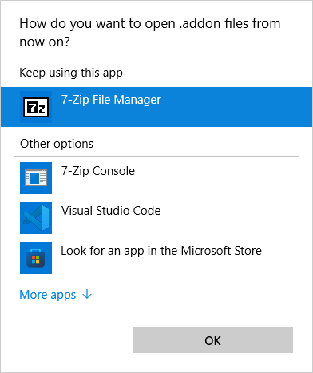

Adding workspaces to add-ons
Abstract: An add-on can include a definition for a new workspace. ‘Inspection’ and ‘Reporting’ are examples for these workspaces. Although there is not UI based workspace editor yet, it is possible to create one nevertheless with some manual work.
Workspaces
Each GOM application does have a list of available workspace on the left side (1).
Which workspaces are available depends on the available licenses and the installed add-ons.
A workspace bundles commands etc. thematically. If, for example, the ‘inspection’ workspace is selected, the toolbar (2) and the view menu (3) above will show everything the user needs to inspect parts, while the ‘report’ workspace provides tool for report page creation.
An add-on can add its own workspace. The ‘Blade CMM’ add-on, for example will provide tools for ‘Airfoil CMM data preparation’ - a feature, which is packaged and not provided by default because it is rather special.
Adding workspaces to add-ons
There is no UI based workspace editor yet, but workspace definitions can be added manually.
An add-on is just a ZIP file with a different extension (.package) containing JSON based object definitions.
It can be unpacked, edited and packaged again with a new workspace definition.
Step 1: Unpack the add-on
Use the tool of your choice to unpack the add-on file.
We recommend 7-zip for that task, but every other zip tool will do the job, too.
If you want to perform these tasks often, you can register your ZIP tool in the Windows “Choose default apps by file type” settings. Then, instead of unpacking and packing the add-on again for each edit, you can fiddle with the add-on content directly from the ZIP tool:

Step 2: Edit the main package content file
The file package.json contains a listing of the add-on content
When editing the package.json file in an add-on, you will notice that all general add-on information is handled there.
Among data like name and description, the package.json file contains a list of “content objects”.
Every content object in the package.json file
is associated with an object_xxx.json file containing the content data and
is tagged with a provider_id entry defining the content type.
In the example, the “Blade CMM” add-on adds a workspace
named “Airfoil CMM Data Preparation”
which exact definition is provided in the add-on file object_0.json
among other content like ‘import_templates’ and ‘scripts’.
Example: package.json
{
"author": "Carl Zeiss GOM Metrology GmbH",
"description": "System package 'Airfoil CMM Data Preparation'",
"uuid": "cab03223-c3ca-4001-af23-23f6d07471cb",
...
"content": [
{
"displayname": "Airfoil CMM Data Preparation",
"object": "object_0.json",
"provider_id": "workspace",
"resources": [],
"content_id": "711632f6-7444-4e66-bf21-00cdd153d535"
},
{
"displayname": "import_cmm_xml.py",
"object": "object_1.json",
"provider_id": "import_templates",
"resources": []
},
{
"displayname": "Blade CMM",
"object": "object_2.json",
"provider_id": "scripts",
"resources": [],
"content_id": ":cab03223-c3ca-4001-af23-23f6d07471cb.Blade_CMM"
}
],
...
}
So to add a workspace to your own add-on, add a new content entry to the add-ons package.json file like above.
Step 3: Add a workspace definition file
The object_xxx.json file contains the complete workspace definition
Add an appropriately named object definition file (object_0.json in the example above) containing the workspace definition
Example: ‘object_0.json’ from the ‘Blade CMM’ add-on defining a workspace for airfoil CMM data preparation:
{
"name": "Airfoil CMM Data Preparation",
"uuid": "711632f6-7444-4e66-bf21-00cdd153d535",
"content": {
"color": [
170,
93,
30
],
"recalc_section": true,
"alignment_section": true,
"sort_index": "19",
"icon": "cmd_mode_eval_blade_cmm",
"workflow_commands": [
"sys.import_file",
"[separator]",
"userscript.Blade_CMM__ProjectSetup__Project_Setup",
"inspect.tb_create_blade_stylus_correction_cmd_group",
"primitive.create_fitting_plane_mp_none_draft",
"inspect.tb_create_profile_section_by_projection_cmd_group",
"[separator]",
"userscript.Blade_CMM__AutoPilot__AutoPilot"
],
"default_visible_tabs": [
"diagram",
"section_view",
"table",
"pip"
]
}
}
“name”
Workspace name as displayed in the workspaces tooltip.
“uuid”
A unique id which matches the “content id” field in the packages.json file.
Please do not define the UUID manually, but use a UUID generator like Online UUID Generator to generate a fresh, truly unique one !
“color”
RGB color of the workspace toolbar background. This default may be overwritten by themes, so e.g. in dark theme the toolbar will be colored in rgb(51,51,51) always.
“recalc_section”
True, if the toolbar should contain a section for recalculation commands
“alignment_section”
True, if the toolbar should contain a section for alignment commands.
“sort_index”
Position of that workspace in the list of workspace. The default (no value given) will add the workspace to the end of the workspace list, which is often fine.
“icon”
The internal name of the icon file.
It is currently possible only to select icons which are part of the GOM software distribution and which are not listed anywhere for the outside world. So this important field is of limited use now. But we will add a method to add custom icons just into that particular content definition file in the near future !
In SW2022-0 and later only:
Choose an icon file in one of the widely supported formats (png, jpg, …). We are using the Qt library functions to read image data, so you can have a look at the related Qt documentation to see the list of supported image formats.
Install add-on Workspace editor tools and use the script in Scripting / Tools / Workspace editor to create a base64 encoded file of this icons data:

Insert the resulting file content as a text item into the icon property:
{
"name": "Airfoil CMM Data Preparation",
"uuid": "711632f6-7444-4e66-bf21-00cdd153d535",
"content": {
...
# The icon definition contains the content of the created encoding as string enclosed in '"'
"icon": "x8Royf4mIiJq8v3YBiIj6IRvW1yr6DhnwUw45R0RErxcr+kREALZDBZvXLgYREdGZHBx1h4iIiIiI...",
...
}
Some icon guidelines
Use only black/white icons to match with the overall application style
Black color: HEX (#333333), RGB (51,51,51)
White color: HEX (#FFFFFF), RGB (255,255,255)
Use image formats that support transparency (e.g. ‘.png’)
Image size:
preferably from 24x24 px (minimum, for script icons) to 64x64 px (recommended for workspace icons)
Try NOT to use any form of compression
Set the workspace (and scripts) icons to look good on a bright background
Normally, this means just a black icon with transparent background
To look good on darker background you have two options:
You put a bright (white) padding around the icon, so it is still visible on dark backgrounds
You let the software automatically invert the icon to white color. The icons will get autobrightened, if the icon contains ONLY the standard black color (see above), and no bright colors (Lightness > 127)
Example

(1) = Icon with padding, stays the same in all modes
(2) = Icon in pure #333333 black, gets auto-brightened in dark modes
“workflow_commands”
Commands on the left side of the workspace toolbar. These command can either be
the name of a “hardcoded” GOM command,
the name of a script command (a command starting a python script)
a special tag like ‘[separator]’ for a separator in the command toolbar.
The command here will become entries in the toolbar from the left to the right. To get the name of the command, you can record it in the script editor and skip the ‘gom.script’ prefix:

This works for scripts, too, if a script is executed from the ‘Scripts’ menu while the script editor is in recording mode.
“sensor_commands”
Commands on the right side of the workspace toolbar. Same principle as above.
“default_visible_views”
Views that are visible per default, e.g. adding “right_docking_area” shows the properties/toolbox window(star) on right side, which is collapsed by default. ( (star) as long as the default_view_layout_right_ isn’t changed). To investigate the name of the view to enter here, start script recording again and switch to that view in the applications UI. This will record a command containing that name:

“default_visible_tabs”
Views that are visible as tabs per default → these are still initially collapsed until adding them to “default_visible_views”.
Step 4: Test your workspace
Save that new content in the add-on.
Install the add-on.
Look for a new workspace in the workspace toolbar on the left side of the application.
Guidelines
Icon guidelines
SVG Format, with a page size of 16x16. E.g. Inkscape page template “Icon 16x16”
Only use two colors:
white (#ffffff) background
black (#333333) foreground
For proper appearance in dark themes:
Only use “black” color, so the icon will get inverted automatically in dark mode
Use a white padding of 0.5px on each side
FAQ
How can I add icons to the workspace toolbar ?
You can only add commands to the toolbar. The commands will bring their own icons. For scripts, which can be added like commands, a custom script icon can be set in the script editor via the ‘edit properties’ feature in the right mouse menu of the script: